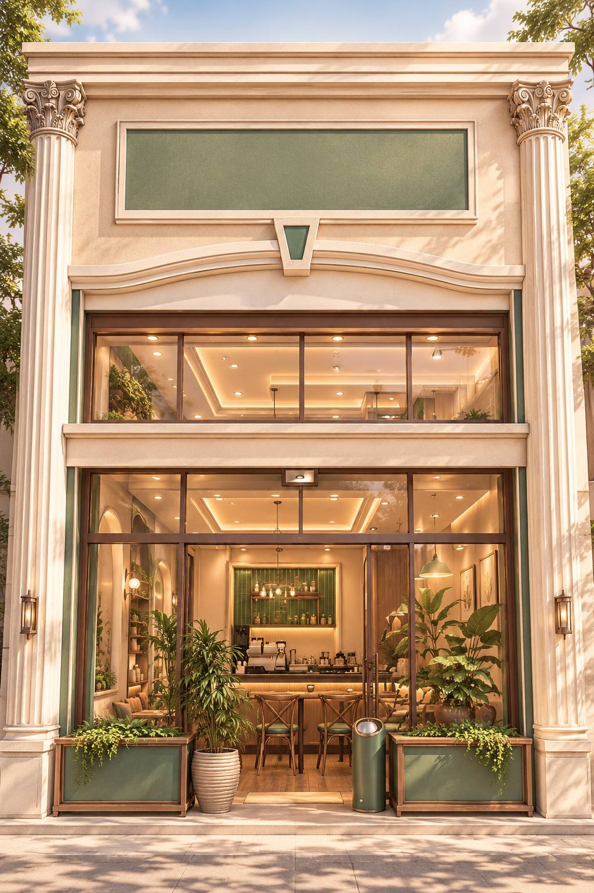
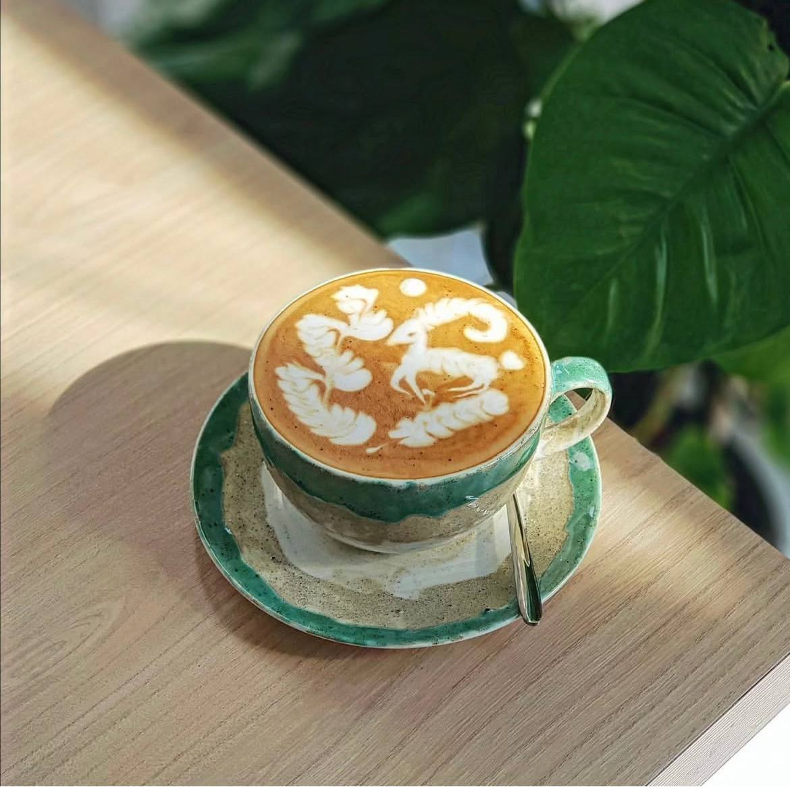
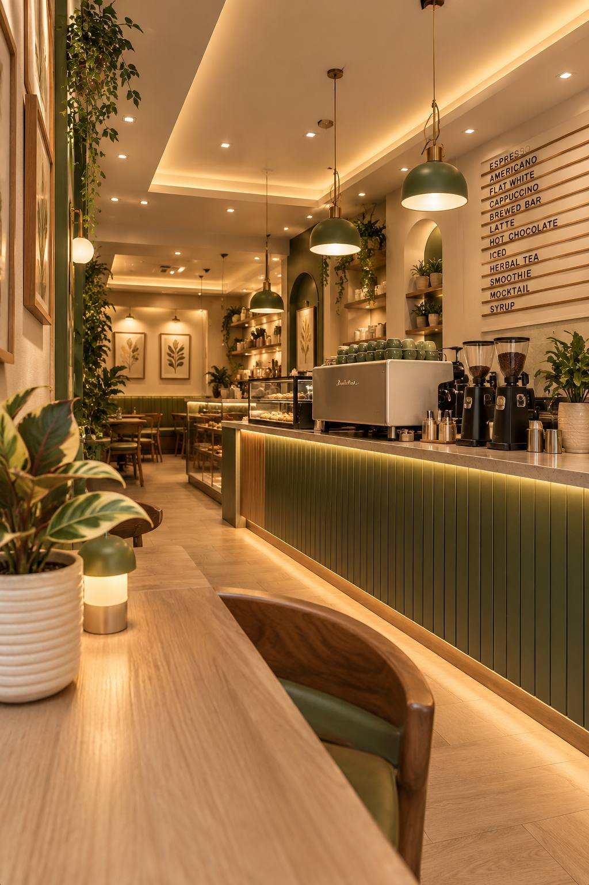

لذت انتخاب
پیدا کردن طعمی که با حالوهوای همان لحظهات جور باشد.
بیشتر از یک فنجان قهوه
جایی برای فاصله گرفتن از شتاب روزمره؛ برای عطر قهوه، گفتوگوهای خوب و لحظههایی که دلت میخواهد کمی بیشتر ادامه پیدا کنند.


لحظهای برای خودت.
از انتخاب یک فنجان تا زمانی که برای خودت کنار میگذاری؛ گاهی همین جزئیات کوچکاند که یک تجربه را بهیادماندنی میکنند.
برای آکام، قهوه فقط نقطه شروع است. آنچه اهمیت دارد، حسی است که از یک مکث کوتاه، یک گفتوگوی صمیمی یا لحظهای آرام با خودت به یاد میماند.
پیدا کردن طعمی که با حالوهوای همان لحظهات جور باشد.
فاصله گرفتن از شتاب روزمره و لذت بردن از اکنون.
چیزی فراتر از نوشیدن قهوه؛ خاطرهای کوچک از یک روز.
هر نامی میتواند نقطه شروع یک داستان باشد.
در برخی فرهنگهای لغت فارسی، «آکام» با تپهها، پشتهها و زمینهای بلند پیوند دارد. برای ما، این تصویر یادآور نگاه کردن از زاویهای تازه است؛ مکثی کوتاه برای دیدن جزئیاتی که در شتاب روزمره ممکن است از چشم پنهان بمانند.
این، برداشت آکام از نام خودش است؛ دعوتی برای تجربه کردن لحظهها با توجهی بیشتر.
در آکام، منو به یک انتخاب محدود نمیشود؛ از قهوههای اسپرسومحور تا دمآوری، دمنوش و نوشیدنیهای سرد، هر بخش مسیر متفاوتی برای انتخاب پیش روی تو میگذارد.

بعضی انتخابها با یک اسپرسو شروع میشوند، بعضی با دمآوری آرام V60 و بعضی با یک نوشیدنی خنک یا فنجانی دمنوش. تنوع منوی آکام برای همین فرصت انتخاب ساخته شده است.
دیدن انتخابهای منوایران، میهان و وطن؛ سه انتخاب برای نوشیدنیهای اسپرسومحور منو.
از V60 با دمآوری دستی تا کلد برو؛ برای تجربههایی متفاوت از قهوه.
Tea Bar، دمنوشها، نوشیدنیهای سرد، شیکها و دسرها؛ انتخابهایی برای حالوهوای متفاوت.
برای آشنایی با موقعیت کافه، به صفحه آدرس سر بزن.
از عطر قهوه تا فضای گرم و صمیمی کافه؛ آکام مجموعهای از جزئیات کوچک است که کنار هم، لحظهای متفاوت از روزمرگی میسازند.
 01 / SPACE
01 / SPACE
 02 / COFFEE
02 / COFFEE
 03 / MOMENTS
03 / MOMENTS
صبح زود، تا آخر شب
فرقی نمیکند روزت را با یک فنجان قهوه شروع کنی یا برای کمی فاصله گرفتن از شلوغی روز به آکام بیایی؛ اینجا جایی برای مکث کردن و لذت بردن از لحظههاست.
مسیر رسیدن به آکام